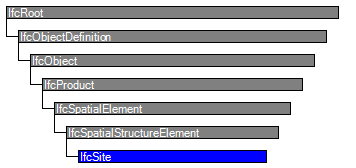

| Grundstück |
 | Site |
 | Site |
| Item | SPF | XML | Change | Description | 4.0.0.0 |
|---|---|---|---|---|
| IfcSite | ||||
| OwnerHistory | MODIFIED | Instantiation changed to OPTIONAL. | ||
| CompositionType | MODIFIED | Instantiation changed to OPTIONAL. |
A site is a defined area of land, possibly covered with water, on which the project construction is to be completed. A site may be used to erect, retrofit or turn down building(s), or for other construction related developments.
NOTE Term according to ISO6707-1 vocabulary "area of land or water where construction work or other development is undertaken".
A site may include a definition of the single geographic reference point for this site (global position using WGS84 with Longitude, Latitude and Elevation). The precision is provided up to millionth of a second and it provides an absolute placement in relation to the real world as used in exchange with geospational information systems. If asserted, the Longitude, Latitude and Elevation establish the point in WGS84 where the point 0.,0.,0. of the LocalPlacement of IfcSite is situated.
The geometrical placement of the site, defined by the IfcLocalPlacement, shall be always relative to the spatial structure element, in which this site is included, or absolute, i.e. to the world coordinate system, as established by the geometric representation context of the project. The world coordinate system, established at the IfcProject.RepresentationContexts, may include a definition of the true north within the XY plane of the world coordinate system, if provided, it can be obtained at IfcGeometricRepresentationContext.TrueNorth.
A project may span over several connected or disconnected sites. Therefore site complex provides for a collection of sites included in a project. A site can also be decomposed in parts, where each part defines a site section. This is defined by the composition type attribute of the supertype IfcSpatialStructureElements which is interpreted as follow:
The IfcSite is used to build the spatial structure of a building (that serves as the primary project breakdown and is required to be hierarchical).
Figure 122 shows the IfcSite as part of the spatial structure. In addition to the logical spatial structure, also the placement hierarchy is shown. In this example the spatial structure hierarchy and the placement hierarchy are identical.
NOTE Detailed requirements on mandatory element containment and placement structure relationships are given in view definitions and implementer agreements.

|
Figure 122 — Site composition |
Figure 123 describes the heights and elevations of the IfcSite. It is used to provide the geographic longitude, latitude, and height above sea level for the origin of the site. The origin of the site is the local placement.
The provision of longitude, latitude, height at the IfcSite for georeferencing is provided for upward compatibility reasons. It requires a single instance of IfcSite and WGS84 as coordinate reference system.
For exact georeferencing (or referencing to any other geographic coordinate system other than WSG84) the entities IfcCoordinateReferenceSystem and IfcMapConversion have to be used to define an exact mapping of the project engineering coordinate system to the geographic (or map) coordinate system.
 |
|
Figure 123 — Site elevations |
HISTORY New entity in IFC1.0.
| # | Attribute | Type | Cardinality | Description | R |
|---|---|---|---|---|---|
| 10 | RefLatitude | IfcCompoundPlaneAngleMeasure | ? |
World Latitude at reference point (most likely defined in legal description). Defined as integer values for degrees, minutes, seconds, and, optionally, millionths of seconds with respect to the world geodetic system WGS84.
NOTE Latitudes are measured relative to the geodetic equator, north of the equator by positive values - from 0 till +90, south of the equator by negative values - from 0 till -90. | X |
| 11 | RefLongitude | IfcCompoundPlaneAngleMeasure | ? |
World Longitude at reference point (most likely defined in legal description). Defined as integer values for degrees, minutes, seconds, and, optionally, millionths of seconds with respect to the world geodetic system WGS84.
NOTE Longitudes are measured relative to the geodetic zero meridian, nominally the same as the Greenwich prime meridian: longitudes west of the zero meridian have negative values - from 0 till -180, longitudes east of the zero meridian have positive values - from 0 till -180. EXAMPLE Chicago Harbor Light has according to WGS84 a longitude -87.35.40 (or 87.35.40W) and a latitude 41.53.30 (or 41.53.30N). | X |
| 12 | RefElevation | IfcLengthMeasure | ? | Datum elevation relative to sea level. | X |
| 13 | LandTitleNumber | IfcLabel | ? | The land title number (designation of the site within a regional system). | X |
| 14 | SiteAddress | IfcPostalAddress | ? | Address given to the site for postal purposes. | X |

| # | Attribute | Type | Cardinality | Description | R |
|---|---|---|---|---|---|
| IfcRoot | |||||
| 1 | GlobalId | IfcGloballyUniqueId | Assignment of a globally unique identifier within the entire software world. | X | |
| 2 | OwnerHistory | IfcOwnerHistory | ? |
Assignment of the information about the current ownership of that object, including owning actor, application, local identification and information captured about the recent changes of the object,
NOTE only the last modification in stored - either as addition, deletion or modification. IFC4 CHANGE The attribute has been changed to be OPTIONAL. | X |
| 3 | Name | IfcLabel | ? | Optional name for use by the participating software systems or users. For some subtypes of IfcRoot the insertion of the Name attribute may be required. This would be enforced by a where rule. | X |
| 4 | Description | IfcText | ? | Optional description, provided for exchanging informative comments. | X |
| IfcObjectDefinition | |||||
| HasAssignments | IfcRelAssigns @RelatedObjects | S[0:?] | Reference to the relationship objects, that assign (by an association relationship) other subtypes of IfcObject to this object instance. Examples are the association to products, processes, controls, resources or groups. | X | |
| Nests | IfcRelNests @RelatedObjects | S[0:1] | References to the decomposition relationship being a nesting. It determines that this object definition is a part within an ordered whole/part decomposition relationship. An object occurrence or type can only be part of a single decomposition (to allow hierarchical strutures only).
IFC4 CHANGE The inverse attribute datatype has been added and separated from Decomposes defined at IfcObjectDefinition. | ||
| IsNestedBy | IfcRelNests @RelatingObject | S[0:?] | References to the decomposition relationship being a nesting. It determines that this object definition is the whole within an ordered whole/part decomposition relationship. An object or object type can be nested by several other objects (occurrences or types).
IFC4 CHANGE The inverse attribute datatype has been added and separated from IsDecomposedBy defined at IfcObjectDefinition. | X | |
| HasContext | IfcRelDeclares @RelatedDefinitions | S[0:1] | References to the context providing context information such as project unit or representation context. It should only be asserted for the uppermost non-spatial object.
IFC4 CHANGE The inverse attribute datatype has been added. | ||
| IsDecomposedBy | IfcRelAggregates @RelatingObject | S[0:?] | References to the decomposition relationship being an aggregation. It determines that this object definition is whole within an unordered whole/part decomposition relationship. An object definitions can be aggregated by several other objects (occurrences or parts).
IFC4 CHANGE The inverse attribute datatype has been changed from the supertype IfcRelDecomposes to subtype IfcRelAggregates. | X | |
| Decomposes | IfcRelAggregates @RelatedObjects | S[0:1] | References to the decomposition relationship being an aggregation. It determines that this object definition is a part within an unordered whole/part decomposition relationship. An object definitions can only be part of a single decomposition (to allow hierarchical strutures only).
IFC4 CHANGE The inverse attribute datatype has been changed from the supertype IfcRelDecomposes to subtype IfcRelAggregates. | X | |
| HasAssociations | IfcRelAssociates @RelatedObjects | S[0:?] | Reference to the relationship objects, that associates external references or other resource definitions to the object.. Examples are the association to library, documentation or classification. | X | |
| IfcObject | |||||
| 5 | ObjectType | IfcLabel | ? |
The type denotes a particular type that indicates the object further. The use has to be established at the level of instantiable subtypes. In particular it holds the user defined type, if the enumeration of the attribute PredefinedType is set to USERDEFINED.
| X |
| IsTypedBy | IfcRelDefinesByType @RelatedObjects | S[0:1] | Set of relationships to the object type that provides the type definitions for this object occurrence. The then associated IfcTypeObject, or its subtypes, contains the specific information (or type, or style), that is common to all instances of IfcObject, or its subtypes, referring to the same type.
IFC4 CHANGE New inverse relationship, the link to IfcRelDefinesByType had previously be included in the inverse relationship IfcRelDefines. Change made with upward compatibility for file based exchange. | X | |
| IsDefinedBy | IfcRelDefinesByProperties @RelatedObjects | S[0:?] | Set of relationships to property set definitions attached to this object. Those statically or dynamically defined properties contain alphanumeric information content that further defines the object.
IFC4 CHANGE The data type has been changed from IfcRelDefines to IfcRelDefinesByProperties with upward compatibility for file based exchange. | X | |
| IfcProduct | |||||
| 6 | ObjectPlacement | IfcObjectPlacement | ? | Placement of the product in space, the placement can either be absolute (relative to the world coordinate system), relative (relative to the object placement of another product), or constraint (e.g. relative to grid axes). It is determined by the various subtypes of IfcObjectPlacement, which includes the axis placement information to determine the transformation for the object coordinate system. | X |
| 7 | Representation | IfcProductRepresentation | ? | Reference to the representations of the product, being either a representation (IfcProductRepresentation) or as a special case a shape representations (IfcProductDefinitionShape). The product definition shape provides for multiple geometric representations of the shape property of the object within the same object coordinate system, defined by the object placement. | X |
| IfcSpatialElement | |||||
| 8 | LongName | IfcLabel | ? |
Long name for a spatial structure element, used for informal purposes. It should be used, if available, in conjunction with the inherited Name attribute.
NOTE In many scenarios the Name attribute refers to the short name or number of a spacial element, and the LongName refers to the full descriptive name. | X |
| ContainsElements | IfcRelContainedInSpatialStructure @RelatingStructure | S[0:?] | Set of spatial containment relationships, that holds those elements, which are contained within this element of the project spatial structure.
NOTE The spatial containment relationship, established by IfcRelContainedInSpatialStructure, is required to be an hierarchical relationship, where each element can only be assigned to 0 or 1 spatial structure element. | X | |
| ServicedBySystems | IfcRelServicesBuildings @RelatedBuildings | S[0:?] | Set of relationships to systems, that provides a certain service to the spatial element for which it is defined. The relationship is handled by the objectified relationship IfcRelServicesBuildings.
IFC4 CHANGE The inverse attribute has been promoted to the new supertype IfcSpatialElement with upward compatibility for file based exchange. | X | |
| IfcSpatialStructureElement | |||||
| 9 | CompositionType | IfcElementCompositionEnum | ? |
Denotes, whether the predefined spatial structure element represents itself, or an aggregate (complex) or a part (part). The interpretation is given separately for each subtype of spatial structure element. If no CompositionType is asserted, the dafault value 'ELEMENT' applies.
IFC4 CHANGE Attribute made optional. | X |
| IfcSite | |||||
| 10 | RefLatitude | IfcCompoundPlaneAngleMeasure | ? |
World Latitude at reference point (most likely defined in legal description). Defined as integer values for degrees, minutes, seconds, and, optionally, millionths of seconds with respect to the world geodetic system WGS84.
NOTE Latitudes are measured relative to the geodetic equator, north of the equator by positive values - from 0 till +90, south of the equator by negative values - from 0 till -90. | X |
| 11 | RefLongitude | IfcCompoundPlaneAngleMeasure | ? |
World Longitude at reference point (most likely defined in legal description). Defined as integer values for degrees, minutes, seconds, and, optionally, millionths of seconds with respect to the world geodetic system WGS84.
NOTE Longitudes are measured relative to the geodetic zero meridian, nominally the same as the Greenwich prime meridian: longitudes west of the zero meridian have negative values - from 0 till -180, longitudes east of the zero meridian have positive values - from 0 till -180. EXAMPLE Chicago Harbor Light has according to WGS84 a longitude -87.35.40 (or 87.35.40W) and a latitude 41.53.30 (or 41.53.30N). | X |
| 12 | RefElevation | IfcLengthMeasure | ? | Datum elevation relative to sea level. | X |
| 13 | LandTitleNumber | IfcLabel | ? | The land title number (designation of the site within a regional system). | X |
| 14 | SiteAddress | IfcPostalAddress | ? | Address given to the site for postal purposes. | X |
Site Attributes
The Site Attributes concept applies to this entity.
Spatial Composition
The Spatial Composition concept template applies to this entity as shown in Table 30.
| ||||
Table 30 — IfcSite Spatial Composition |
By using the inverse relationship IfcSite.Decomposes it references IfcProject || IfcSite through IfcRelAggregates.RelatingObject, If it refers to another instance of IfcSite, the referenced IfcSite needs to have a different and higher CompositionType, i.e. COMPLEX (if the other IfcSite has ELEMENT), or ELEMENT (if the other IfcSite has PARTIAL).
Spatial Decomposition
The Spatial Decomposition concept template applies to this entity as shown in Table 31.
| ||||
Table 31 — IfcSite Spatial Decomposition |
By using the inverse relationship IfcSite.IsDecomposedBy it references (em>IfcSite || IfcBuilding || IfcSpace by IfcRelAggregates.RelatedObjects. If it refers to another instance of IfcSite, the referenced IfcSite needs to have a different and lower CompositionType, i.e. ELEMENT (if the other IfcSite has COMPLEX), or PARTIAL (if the other IfcSite has ELEMENT).
Spatial Container
The Spatial Container concept template applies to this entity as shown in Table 32.
| ||||
Table 32 — IfcSite Spatial Container |
Property Sets for Objects
The Property Sets for Objects concept template applies to this entity as shown in Table 33.
| |||||||||||||||||||||||||||||||||||||||
Table 33 — IfcSite Property Sets for Objects |
Quantity Sets
The Quantity Sets concept template applies to this entity as shown in Table 34.
| ||||||||||||||||||
Table 34 — IfcSite Quantity Sets |
Product Local Placement
The Product Local Placement concept applies to this entity.
FootPrint GeomSet Geometry
The FootPrint GeomSet Geometry concept applies to this entity.
Object User Identity
The Object User Identity concept (defined at a supertype) does NOT apply to this entity.
Object Typing
The Object Typing concept (defined at a supertype) does NOT apply to this entity.
Object Predefined Type
The Object Predefined Type concept (defined at a supertype) does NOT apply to this entity.
<?xml version="1.0"?>
<ConceptRoot xmlns:xsi="http://www.w3.org/2001/XMLSchema-instance" xmlns:xsd="http://www.w3.org/2001/XMLSchema" uuid="015811e2-0063-4a8a-b4d6-97b9d406e7c1" name="IfcSite" status="sample" applicableRootEntity="IfcSite">
<Applicability uuid="00000000-0000-0000-0000-000000000000" status="sample">
<Template ref="da862ca3-4d34-4f77-b54c-afab9153edf3" />
<TemplateRules operator="and" />
</Applicability>
<Concepts>
<Concept uuid="c9d38083-a919-464e-8d2d-a0f25c059092" name="Site Attributes" status="sample" override="false">
<Template ref="f6c9eecc-f5fc-4096-a037-12c2cd4d9d97" />
<Requirements>
<Requirement applicability="import" requirement="recommended" exchangeRequirement="dcd96125-898e-4ff0-b294-eb02afe953aa" />
<Requirement applicability="export" requirement="recommended" exchangeRequirement="dcd96125-898e-4ff0-b294-eb02afe953aa" />
</Requirements>
</Concept>
<Concept uuid="a3feffdb-78e2-4c87-ad0a-9908857dac92" name="Spatial Composition" status="sample" override="false">
<Template ref="8c0fd2f7-71bb-4e6e-8fdb-0c02b352f14a" />
<TemplateRules operator="and">
<TemplateRule Description="Direct assignment to project, if the site is the outermost spatial container (default)" Parameters="Spatial Composite=IfcProject;" />
<TemplateRule Description="Assignment to a site complex." Parameters="Spatial Composite=IfcSite;" />
</TemplateRules>
</Concept>
<Concept uuid="d86fc729-0ef4-4412-9a90-751762d3422d" name="Spatial Decomposition" status="sample" override="false">
<Template ref="667f8443-ecce-4a8d-a63f-931fab0453e0" />
<Requirements>
<Requirement applicability="export" requirement="recommended" exchangeRequirement="dcd96125-898e-4ff0-b294-eb02afe953aa" />
<Requirement applicability="import" requirement="recommended" exchangeRequirement="dcd96125-898e-4ff0-b294-eb02afe953aa" />
</Requirements>
<TemplateRules operator="and">
<TemplateRule Description="Spatial decomposition into building." Parameters="Spatial Parts=IfcBuilding;" />
<TemplateRule Description="Spatial decomposition directly into spaces that are allocated at the site." Parameters="Spatial Parts=IfcSpace;" />
<TemplateRule Description="Spatial decomposition directly into spatial zones that are allocated at the site." Parameters="Spatial Parts=IfcSpatialZone;" />
</TemplateRules>
</Concept>
<Concept uuid="95db597d-6033-4da7-8e2c-54a9080ea5cc" name="Spatial Container" status="sample" override="false">
<Template ref="61dd08ed-fd01-4955-9337-8afd284a0e6f" />
<Requirements>
<Requirement applicability="export" requirement="recommended" exchangeRequirement="dcd96125-898e-4ff0-b294-eb02afe953aa" />
<Requirement applicability="import" requirement="recommended" exchangeRequirement="dcd96125-898e-4ff0-b294-eb02afe953aa" />
</Requirements>
<TemplateRules operator="and">
<TemplateRule Description="The site may contain elements directly (if those are not assigned to the individual building, building stories or spaces" Parameters="Type=IfcElement;" />
</TemplateRules>
</Concept>
<Concept uuid="38756051-0a03-4275-b7ff-a5683f611386" name="Property Sets for Objects" status="sample" override="false">
<Template ref="f74255a6-0c0e-4f31-84ad-24981db62461" />
<TemplateRules operator="and">
<TemplateRule Parameters="PsetName=Pset_LandRegistration;" />
<TemplateRule Parameters="PsetName=Pset_SiteCommon;" />
</TemplateRules>
</Concept>
<Concept uuid="7297e6d0-2fa6-4769-a31c-cdff3974d1cb" name="Quantity Sets" status="sample" override="false">
<Template ref="6652398e-6579-4460-8cb4-26295acfacc7" />
<Requirements>
<Requirement applicability="export" requirement="recommended" exchangeRequirement="dcd96125-898e-4ff0-b294-eb02afe953aa" />
<Requirement applicability="import" requirement="recommended" exchangeRequirement="dcd96125-898e-4ff0-b294-eb02afe953aa" />
</Requirements>
<TemplateRules operator="and">
<TemplateRule Parameters="QsetName=Qto_SiteBaseQuantities;" />
</TemplateRules>
</Concept>
<Concept uuid="b0b5cf45-fd54-4a1c-a911-3d43cca1b75f" name="Product Local Placement" status="sample" override="false">
<Template ref="cbe85b5f-7912-4a43-8bb7-1e63bf40b26d" />
</Concept>
<Concept uuid="44a01bfe-09a0-40d6-ac52-f0e458838f61" name="FootPrint GeomSet Geometry" status="sample" override="false">
<Template ref="9456d6d6-a62a-48b4-baff-be2e38baac9c" />
<Requirements>
<Requirement applicability="export" requirement="recommended" exchangeRequirement="dcd96125-898e-4ff0-b294-eb02afe953aa" />
<Requirement applicability="import" requirement="recommended" exchangeRequirement="dcd96125-898e-4ff0-b294-eb02afe953aa" />
</Requirements>
</Concept>
<Concept uuid="f100d9f5-790d-4932-b998-0071443c4888" name="Object User Identity" status="sample" override="false">
<Template ref="c19ec186-9cfd-47fc-a4d4-9fb35008d04a" />
</Concept>
<Concept uuid="bff2aadb-6cc6-44d9-a532-2dd720adbb0e" name="Object Typing" status="sample" override="false">
<Template ref="35a2e10e-20df-40f4-ab2f-dacf0a6744f4" />
</Concept>
<Concept uuid="c37069e1-90b4-45d7-b321-46aa5cd7180d" name="Object Predefined Type" status="sample" override="false">
<Template ref="25248261-98df-4d0a-9364-5653575ca421" />
</Concept>
</Concepts>
</ConceptRoot>
<xs:element name="IfcSite" type="ifc:IfcSite" substitutionGroup="ifc:IfcSpatialStructureElement" nillable="true"/>
<xs:complexType name="IfcSite">
<xs:complexContent>
<xs:extension base="ifc:IfcSpatialStructureElement">
<xs:sequence>
<xs:element name="SiteAddress" type="ifc:IfcPostalAddress" nillable="true" minOccurs="0"/>
</xs:sequence>
<xs:attribute name="RefLatitude" type="ifc:List-IfcCompoundPlaneAngleMeasure" use="optional"/>
<xs:attribute name="RefLongitude" type="ifc:List-IfcCompoundPlaneAngleMeasure" use="optional"/>
<xs:attribute name="RefElevation" type="ifc:IfcLengthMeasure" use="optional"/>
<xs:attribute name="LandTitleNumber" type="ifc:IfcLabel" use="optional"/>
</xs:extension>
</xs:complexContent>
</xs:complexType>
ENTITY IfcSite
SUBTYPE OF (IfcSpatialStructureElement);
RefLatitude : OPTIONAL IfcCompoundPlaneAngleMeasure;
RefLongitude : OPTIONAL IfcCompoundPlaneAngleMeasure;
RefElevation : OPTIONAL IfcLengthMeasure;
LandTitleNumber : OPTIONAL IfcLabel;
SiteAddress : OPTIONAL IfcPostalAddress;
END_ENTITY;
 Instance diagram
Instance diagram Link to this page
Link to this page